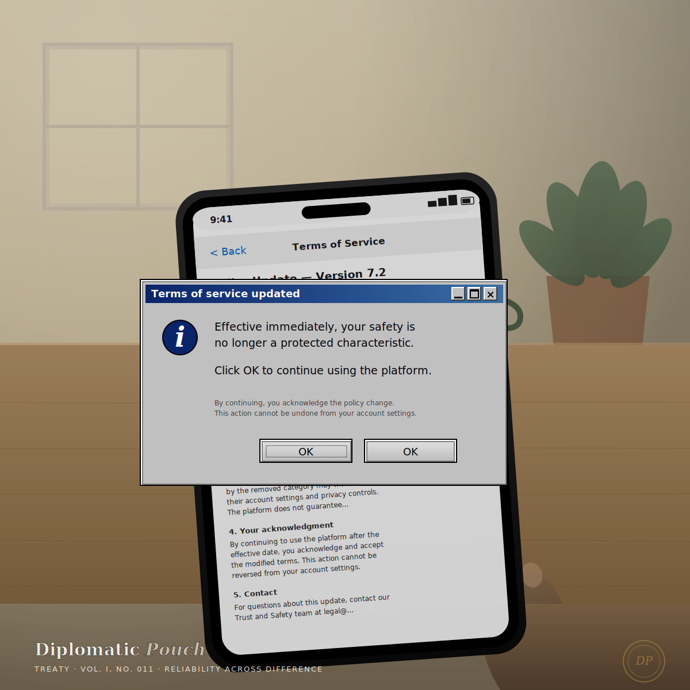

Reliability Across Difference
What the data on LGBTQ+ users tells us about who our systems were designed to protect — and who they were not.

When I finished my dissertation at Marymount in 2023, the argument I made was that the foundations of digital trust — reliability, security, and privacy — cannot be designed without taking seriously the intersecting marginalized identities of the people who use the systems we build. The traditional CIA Triad protects information. The next generation of practice, I argued, must protect people. I proposed three properties that would extend the Triad toward that end: reliability across difference, equitable security, and privacy as practice.
I wrote that dissertation for a specific set of users I could name. Black users. Low-income users. Trans users. Users at the intersections of these. I wrote it from inside those intersections, in the case of the last one.
Three years later, the data on what has happened to those users is worse than what the dissertation predicted. I want to write about one of the three properties — reliability across difference — using LGBTQ+ users as the sharpest empirical case. Not because the argument is only about them. Because the argument is now most legible in what has been permitted to happen to them.
I did not think, when I finished the dissertation, that the next three years would produce a public case study for its central claim. The claim required that decisions be made about whom systems were reliable for and whom they were not. I assumed the decisions would continue to be implicit. I was wrong. Since January 2025 the decisions have been explicit, documented in policy language, and defended by the companies that made them.
What "reliability across difference" was supposed to mean
The property I proposed was straightforward. A system is reliable when it behaves as expected. But "as expected" is not a universal standard. The system is reliable for its designers' assumed user profile. It may or may not be reliable for users whose profile diverges from that assumption. Reliability across difference is the requirement that the system behave as expected across the full range of users it will actually encounter — particularly the users at the margins of the designer's assumptions.
A facial recognition system that performs at 99.5% aggregate accuracy but at 65% for dark-skinned women is not a reliable system. It is a reliable system for lighter faces and an unreliable system for the users at the specific margin where reliability would matter most. The aggregate number hides the disparity. The disparity is the security failure.
A content moderation system that removes the majority of harassment against the majority user profile but only a small fraction of harassment against marginalized users is not a reliable moderation system. It is a reliable moderation system for one set of users and an actively unreliable system for another. The disparity, again, is the security failure.
The argument I made in 2023 — the argument the field made, in the years around that argument, if I am honest about the intellectual history — was that this pattern was under-recognized rather than deliberate. That once we surfaced the pattern with data, security architects and platform designers would move to close the reliability gap because the gap represented an obvious defect.
I was mostly wrong about that.
What the current data shows
Here is what the numbers say now. I am naming the sources because a Treaty on this topic that cannot be sourced is worse than no Treaty at all.
The Trevor Project's 2023 U.S. National Survey on the Mental Health of LGBTQ Young People, based on more than 28,000 respondents ages 13 to 24, found that 67% reported symptoms of anxiety and 54% reported symptoms of depression in the previous year. 41% of respondents seriously considered attempting suicide. Half of transgender and nonbinary respondents seriously considered attempting suicide. 56% of respondents who wanted mental health care did not receive it.
The Trevor Project's October 2025 longitudinal study — the first longitudinal study of LGBTQ+ youth mental health — followed 1,689 LGBTQ+ youth over three waves from September 2023 to March 2025. In that eighteen-month period, anxiety symptoms rose from 57% to 68%. Depression rose from 48% to 54%. Suicidal ideation rose from 41% to 47%. The direction of the trend was upward.
The CDC's 2024 analysis found that 26% of transgender and gender-questioning students had attempted suicide in the past year, compared to 5% of cisgender male students and 11% of cisgender female students.
GLAAD's Social Media Safety Index, in its 2025 and 2026 reports, documented what platform companies actually did with their moderation policies during this period. In early 2025, Meta modified major sections of its Hateful Conduct policy to explicitly allow calling LGBTQ+ people "abnormal" and "mentally ill." YouTube removed "gender identity" from its list of protected characteristics in its hate speech policy. All six major platforms in the Index scored below 60 out of 100 in 2025. In the 2026 report — the sixth annual — the scores declined further at every platform except TikTok. Meta and YouTube maintained their 2025 rollbacks. X dropped to 29 out of 100, the lowest platform score the Index has recorded.
GLAAD documented more than one thousand anti-LGBTQ+ incidents nationwide in 2025. The FBI reported that anti-LGBTQ+ bias accounted for more than 20% of reported hate crimes for the third consecutive year.
These are not numbers about a user population the field failed to design for by inattention. They are numbers about a user population that has been affirmatively targeted by policy decisions the platforms documented, published, and defended.
Meta's language for its policy change was that it was "restoring free expression." That framing tells us what the company thinks the reliability requirement is for. The company is not confused about which users the moderation system was previously reliable for. The company has decided which users it wants the moderation system to be reliable for going forward. The users the system used to protect are, in the new framing, an obstacle to free expression that the platform has now removed.
I want to sit with what this means, because I think the security industry has not fully absorbed it. This is not a system that failed to be reliable across difference by accident. This is a system that was reliable across difference — imperfectly, incompletely, but measurably — and was then affirmatively made less reliable, by the company that owns it, on the record. The reliability failure is a design output, not a design flaw.
What twelve years in federal SOCs taught me about the pattern
I want to add one observation from twelve years of building cloud security operations centers, first at NASA for eight years and then at the U.S. Department of Justice for four. I am not going to describe any specific incident, and I am not going to name any client system. What I can say is that a pattern I saw across those years, in both environments, was that the identity infrastructure — the authentication systems, the recovery flows, the fraud detection models, the anomaly scoring — had been designed against a user model that assumed a stable name, a stable phone number, a stable email, a stable relationship between the person and the documentation the person carried.
The users whose identities did not fit that stability profile generated tickets. Users whose legal name and lived name differed. Users whose recovery contacts had changed for reasons the platform could not model. Users whose access patterns were flagged as anomalous because the modal user in the training data was someone whose life did not look like theirs. The tickets were resolved case by case, often with real care by individual analysts. The infrastructure that produced the tickets did not change. The tickets kept coming.
What I noticed across twelve years is that reliability across difference is not primarily a technical problem. The technical layer can be adjusted to accommodate any particular exception once the exception is surfaced. What cannot be adjusted, without deliberate architectural intervention, is the assumption that the modal user is the standard user, and that the deviation from the modal user is a defect to be handled by exception rather than a signal to be designed for.
Federal systems, by the nature of the populations they serve, cannot afford to treat non-modal users as exceptions at scale. The population is too large and too diverse for the exception queue to hold. Enterprise systems generally can afford to treat non-modal users as exceptions — for a while, until the population grows large enough to become an operational problem, at which point the architecture is difficult to change. What I saw at NASA and DOJ was, in retrospect, the same problem the dissertation was arguing about, at a different resolution. What I have seen since — in the platform policy changes documented in the Trevor Project and GLAAD data — is the same problem again, at a third resolution, where the architects have moved from ignoring the reliability gap to defending it.
What honest practice requires now
If you build or run identity infrastructure, or content moderation, or any system whose users diverge from the assumed profile — which is every real system — here is what reliability across difference actually asks of you.
One. Report disaggregated reliability, not aggregate accuracy. The single most important operational change is to stop letting the aggregate number hide the disparity. Every reliability metric your team reports should be broken down by the user segments where the divergence would matter. If your fraud model catches 98% of fraud on average and 72% on a subpopulation whose transaction patterns differ from the modal user's, the report needs to say that. If your recovery flow succeeds 94% of the time on average and 41% for users whose recovery contacts have changed in the past year, the report needs to say that. The disparity is the finding. Hiding it inside the aggregate is how architects and executives get to believe the system is reliable when it is not.
Two. Move the marginal user into the requirements document. Most architecture documents specify the system's behavior for the intended user. Very few specify its behavior for users at the margins. Add that specification. Name, in the requirements, the categories of users the system is required to be reliable for — including the specific marginal cases your team has surfaced through research, incidents, or the composition of your users. Once a marginal case is in the requirements document, the reliability gap becomes a bug rather than a feature request. This is the smallest change with the largest downstream effect. It also creates the documentary record that regulators and litigators will eventually ask for.
Three. Distinguish reliability failure from policy choice, and require accountability for both. When a reliability gap is identified, the response should not be a single conversation. It should be two: first, is this a technical failure that can be closed? And second, if the gap persists after the technical fix is possible, is the persistence a policy choice? Both answers should be documented. The current pattern in enterprise security is to treat every reliability gap as if it were a technical problem awaiting a technical fix, which allows the policy choices — the choices about which users the platform intends to be reliable for — to remain unspoken. Unspoken policy choices become plausibly deniable. Plausibly deniable policy choices become defensible in public communications the way Meta's have been. If your program does not distinguish reliability failure from policy choice, your program is enabling the same pattern the platforms are enabling.
The pouch
A Treaty in this publication is an argument about what I believe. I want to end this one plainly.
Reliability across difference is not a nice-to-have. It is the central security property of any system whose users diverge from the designers' assumptions, and every real system's users diverge. The question is only whether the divergence has been surfaced and designed for, or whether it has been hidden inside the aggregate accuracy numbers that make the system look reliable to the people who paid for it.
The current data on LGBTQ+ users — mental health, harassment, platform moderation, hate crime — tells us that the platforms most people use to access most of the internet have decided which users they intend to be reliable for. The decision was made deliberately, published publicly, and defended in policy language. This is not a failure the field can address by trying harder at fairness metrics. It is a design output that requires design intervention: changing what the reliability requirement measures, who gets to define it, and what accountability follows from a reliability gap that persists after it has been surfaced.
I said in the CIA Triad Treaty earlier this year that we are all deciding what the cybersecurity field thinks is worth protecting. The last three years have been an accelerated public case study in that decision. Some of the users the field has left exposed have specific names now. Trans users. LGBTQ+ users of color. Users at intersections of identity that platform designers did not include in the assumed profile. These users are not asking for exceptional treatment. They are asking for reliability. It turns out that reliability, when you require it across all your users rather than just the assumed ones, is a different property than the property the field has been building.
I am writing this Treaty in part because I owe the users I was writing my dissertation for a public accounting of what has happened since. It is not a good accounting. The work of extending the pouch was always going to be difficult. It has now been made harder by decisions that were not made in ignorance. The next work is to name the decisions and to hold them to the standard the field claims to hold itself to.
Next dispatch ── To be sealed in September.
— Dr. Safi Mojidi